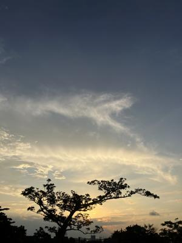
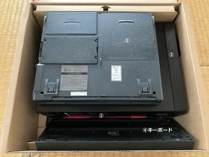
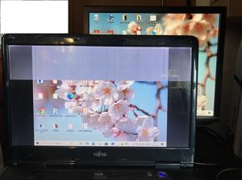

うるがいの話 ある日
最新: パソコンの廃棄【うるがいの話 ある日】とは 一日だけのプログです
『うるがいの話』の最新一日だけのプログで、通信料が少なく経済的だ。カニの画像をクリックすると全ての日付が載る『うるがいの話』サイトを表示します
|
|
【うるがいの話】 うるがい(ｳﾙｶﾞｲ urugai)とは、『もずくがに』の名前でとても大きくなります。 |
|---|---|
|
|
【カミマヤーの話】 猫のことを方言でマヤーといいます。カミマヤー（kamimayaa）とは、神の猫のことです。 |
|
【たながぁの音楽】 たながぁ（ﾀﾅｶﾞｰ tanagaa）とは手長えびのことで、何種類かあり大きいのは車 エビぐらいになります。 |

|
【ぶながぁの話】 ぶながぁ(ﾌﾞﾅｶﾞｰ bunagaa)とは、赤い髪の毛、赤い身体、そして身長は１ｍ２０ｃｍ ぐらい、川の蟹を食べているの目撃された。場所は沖縄県国頭郡大宜味村のと ある村僕の隣近所に住んでいる爺さんから、聞いた話です。 |
|
|
【ギーマの話】 ギーマ(giima)とは、山原の里山に咲くスズランに似た、 花を付けます。実は食べられます、 気が付くと口の周りが紫になっています。 |
2025年10月17日 (金）パソコンの廃棄
16:09

１４：５０分、佐川急便に廃棄のパソコンを引き渡す。お世話に
なったパソコン達である。

1.FMV-BIBLO NU13D
発売開始時期 1997/6/4 価格は ... 403,000円. Pentium(R)-133
12.1型 Windows(R)95モデル
仕事先でのリース物件を、一台数千円で払下げしたもの。私が購
入し、ヨメ方の誰が利用していたもの。
マンションを片づけていたら押入れから出てきた。電源は入らず。
2.FMV LIFEBOOK SH54/G 2012年春モデル（１１年）
2012年1月 発売 ネット価格 ¥156,933 Intel Core i3
メモリ（標準）4GB 13.3型ワイドWindows7HomePremium64ビット
子供が使用、モニタ画面を破壊させる。が外付けモニタで利用
できた。
2018.09.11,Windows10にアップグレードした後、
2023.07.26にメモリを流用するため、利用を止める。今回、動
作確認したが、ｏｓ起動せず。
3.DELL inspiron3647(PC1号) （１０年）
2015.12.24(48,040円) メモリ最大容量. 16GB Core i3
Windows10 500G
私が10年近く愛用、個々の部品をチェックするが問題ないと診
断されるもなぜか起動しなくなった。
2021.05.26 SSD 500G に変更する早い！
2024.12.24 PC1のブルー画面が出始める
2024.12.26 PC1の代わりに押し入れから、取り出し使い始める
2024.12.31 PC1一度目覚めた
2025.10.10 延命措置を試みるもお釈迦様
下は、上記パソコンと壊れたキーボード
ついでに、今回準備した予備ノートパソコン（１５年生）

下の写真は、数日前は外付けモニタがブルーになっていたが、普
通に表示されるようになった。
LIFEBOOK AH AH550/5A FMVA555A 2010年夏モデル
画面サイズ：15.6型(インチ) CPU：Core i5 450M/2.4GHz/2コア
メモリ容量：4GB OS：Windows 7 Home Premium 32/64bit
値段 150,000円半ば
2018.08.11 Windows10にアップグレード
2021.05.28 SSD 240GBに変更
2023.6.14 画面がおかしくなり始め、利用を停止
2023.7.29 windows11 22H2 にアップグレード
2025.10.14 windows11にする前のwindows10のバックアップを
復元、UPDATEを実施
Ｗｉｎｄｏｗｓ１０が１年延命！２０２６年１０
月まで無料で使える対応を行う
ノートパソコンの購入金額は記録がなく、ネットの情報、でも高
いよね、私の高機能ディスクパソコンの１５万と比べると。